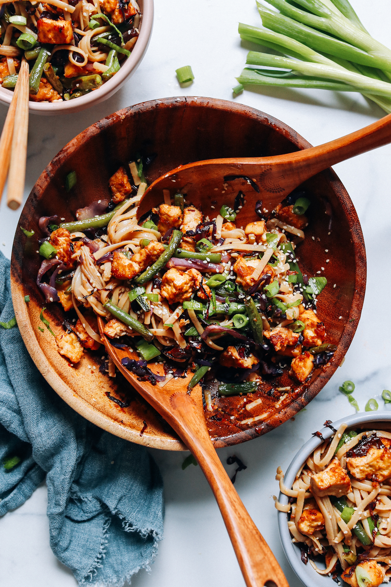

Vegan Ginger Sesame Noodles with Crispy Tofu

Description
An easy sheet pan meal with flavorful seasoned tofu and crispy roasted vegetables tossed with saucy
ginger sesame noodles. SO flavorful, gluten-free, plant-based, and just 10 ingredients!
This is the dish that got finally got me into tofu. It's a little complex, taking about an hour to prepare,
but it's so worth it. Recipe courtesy of
Minimalist Baker
Ingredients
Sauce
Tofu and Veggies
Noodles and Garnish
Steps to Prepare
-
Preheat the oven to 425 F (218 C) and line a baking sheet with parchment paper.
-
Wrap your extra-firm tofu in an absorbent towel. Set something heavy on top — like a cast
iron skillet — to press out extra moisture for 15 minutes. Alternatively, use a tofu press.
-
SAUCE: Meanwhile, in a small bowl, whisk together the tamari, avocado (or olive) oil,
toasted sesame oil, maple syrup, grated ginger, chili garlic sauce (or sriracha), and
optional lime juice. Set aside.
-
TOFU: Crumble the tofu into pieces less than 1/2 inch in size and arrange them on half of
the parchment-lined baking sheet. Pour 1/4 cup of the sauce (60 ml // adjust if altering
the default number of servings) over the tofu and toss to evenly coat. Set aside. Place the
extra sauce into a serving bowl.
-
VEGGIES: Prepare the vegetables. Chop the green beans into thirds. Cut the cabbage into quarters,
remove the core, and cut the quarters into 1/4-inch slices until you have about 2 cups sliced
cabbage (adjust amount if altering batch size). Place the vegetables on the other half of the
baking sheet next to the tofu. Drizzle the vegetables with oil and tamari and toss to coat,
making sure to keep the tofu and vegetables separate.
-
Place the tofu and vegetables into the preheated oven and bake for 30-35 minutes, tossing halfway
through, until the tofu and vegetables are crispy and lightly browned on the edges.
-
NOODLES: While the vegetables and tofu are baking, bring a large pot of water to a boil. Once the
water is boiling, cook your noodles of choice according to the package instructions. Once done,
strain the noodles and set them aside.
-
When the tofu and vegetables are done cooking, remove from the oven and place the vegetables
and noodles into the serving bowl that has the extra sauce. Toss well to coat.
-
To serve, top the noodles and veggies with the crispy tofu and garnish with optional
sliced green onions and sesame seeds. Enjoy!